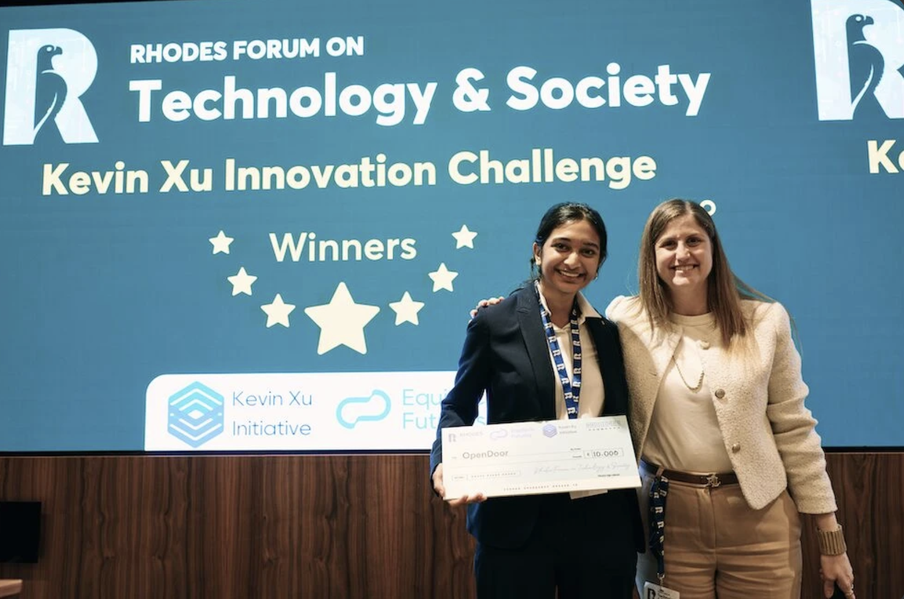
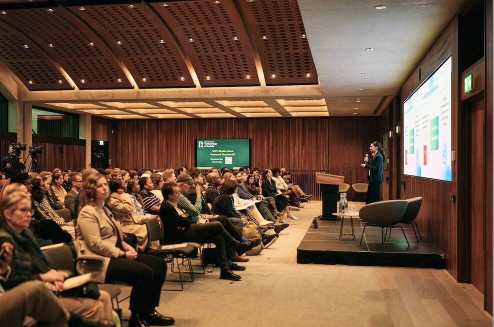
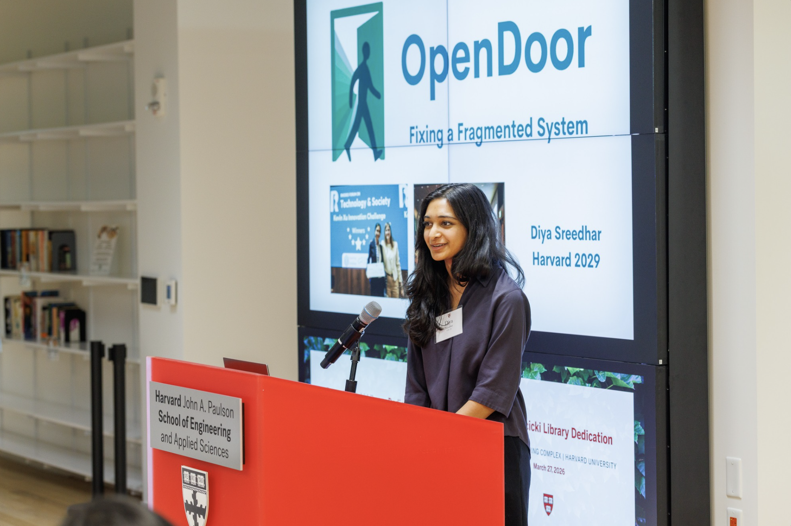

I founded OpenDoor, an AI platform for connecting unhoused and underhoused individuals to social-service programs. In 2025, OpenDoor received first place in the Kevin Xu Innovation Challenge, awarded at the Rhodes Forum on Technology & Society - the Rhodes Trust's annual convening on AI tools for access and opportunity.
OpenDoor uses AI to connect unhoused and underhoused individuals to social services they qualify for - housing, healthcare, food assistance, and workforce training - without the typical waitlists and confusing eligibility paperwork. The platform combines a real-time service-matching engine, an AI caseworker that automates client follow-up, and a job-training agent for interview preparation and certifications. A longer description is in the Equitech Futures profile.
The Rhodes Trust, along with sponsors at Google and the Eric Schmidt Foundation, funded $50,000 to support the project's expansion, which has led to deployments at over 50 partner organizations in Los Angeles and Boston.

